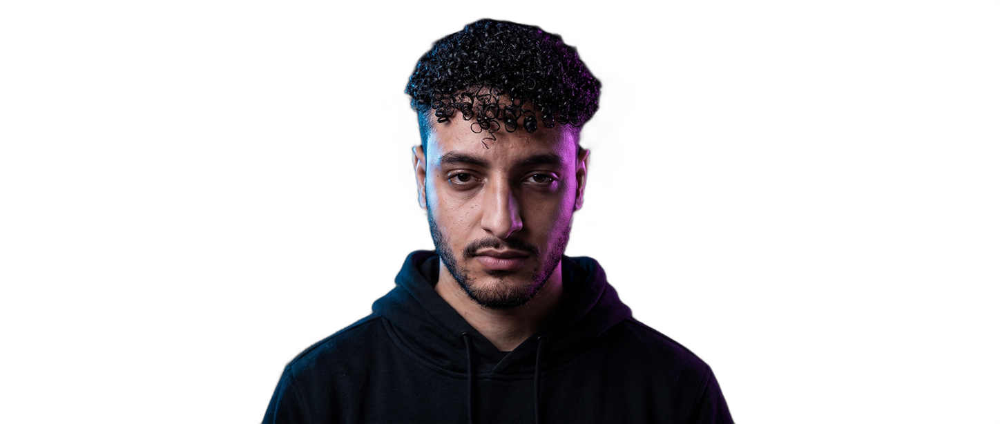

Por Trás do Código
sddasdadasdasdsadas dasdasdasdsadasssssssssddaaaaaaaaaaaaaaaaaaaaaaaaaaaaaaaaaaaaaaaaaaaaaaaaaaaaaaaaaaaaaaaaaaaaaaaaaaaaaaaaaaaaaaaaaaaaaaaaaaaaaaaaaaaaaaaaaaaaaaaaaaaaaaaaaaaaaaaaaaaaaaaaaaaaaaaaaa
Pra te contar quem eu sou, preciso voltar pra um momento marcante lá no ensino médio.
Na época, eu fazia parte da organização das olimpíadas científicas da escola e foi ali que tive meu primeiro contato com programação. Lembro até hoje da sensação quando meu primeiro algoritmo de busca binária passou no Beecrowd durante um dos treinos. Aquilo acendeu alguma coisa em mim. Não era só resolver um problema. Era entender a lógica, aplicar e ver funcionar. Foi quando decidi que queria viver disso.
Sou movido por desafios e pela busca constante por melhorar. Gosto de pensar de forma estratégica, de me aprofundar, de construir coisas que realmente façam sentido. Às vezes isso vem com um pouco de perfeccionismo e exigência, mas estou aprendendo a transformar isso em força.
Se quiser acompanhar minha jornada (e quem sabe fazer parte dela), me chama por aqui